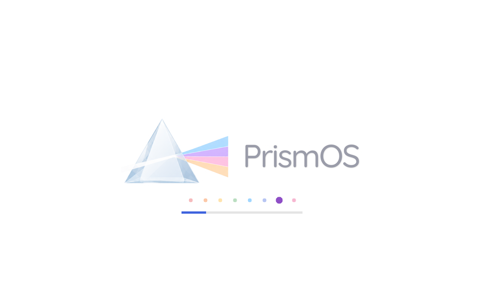
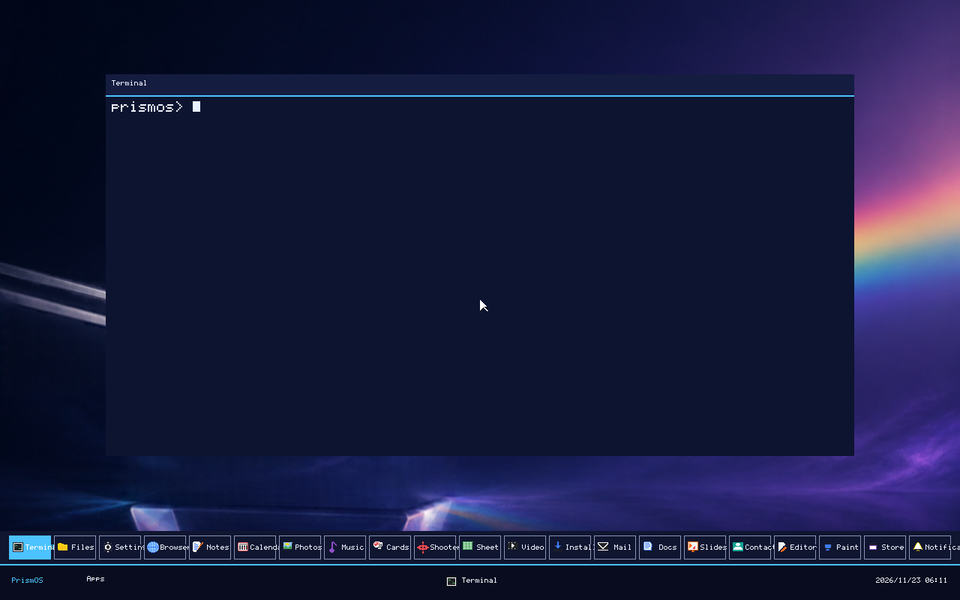
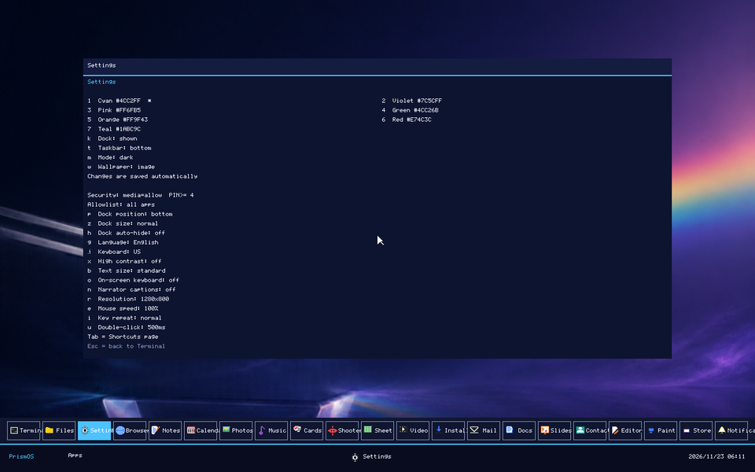
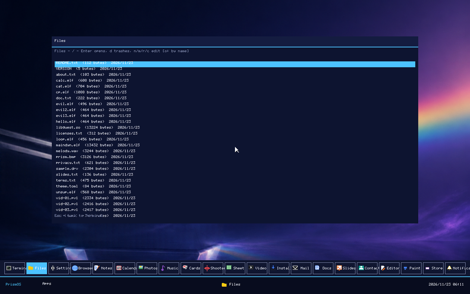
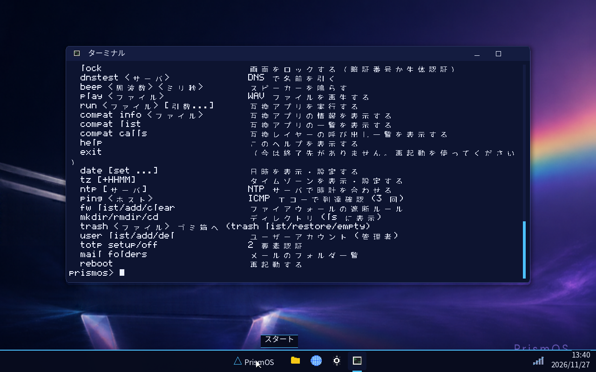
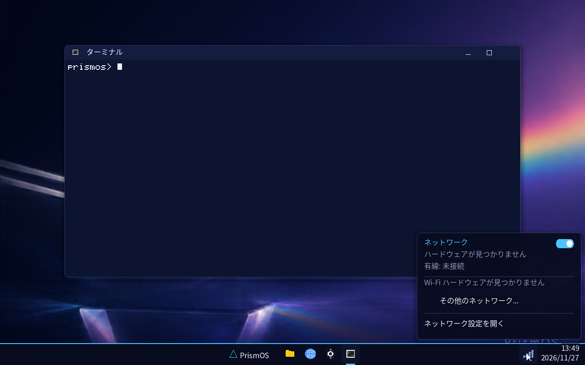

PrismOS とは
PrismOS は、見た目も動きも自分好みに変えられることを目指した デスクトップ OS です。中央寄せのモダンな UI、Dock と横断検索、 2 つの体系のコマンドが使えるシェルを持ち、テーマ・壁紙・ タスクバーの位置から細部までカスタマイズできます。 使いやすさは「かんたんモード」のような割り切りではなく、 良い初期設定と 1 つの統一された画面で実現します。
カスタマイズ
アクセントカラー、壁紙（自分の画像も可）、タスクバーと Dock の 位置・サイズ、ショートカット、文字サイズなどを設定アプリから 変更できます。設定は自動保存されます。
標準アプリ
ブラウザ（Prism Browser）、オフィス（Prism Office：文書・ 表計算・スライド）、メール、カレンダー、連絡先、メモ、時計、 カメラ、ボイスレコーダー、写真・動画・音楽プレイヤー、 3D シューティングゲームとトランプ一式、アプリストア （Prism Store）など全 24 本が入っています。
セキュリティ
市役所レベルの Enterprise 標準を最初から適用。ディスク全体の 暗号化、複数ユーザー＋ゲスト、PIN ポリシーとロックアウト、 TOTP 2 要素認証、アプリ許可リスト、改ざん検知つき監査ログ、 署名（ML-DSA）のない更新・ドライバの拒否まで備えます。 アカウントはローカルのみで、テレメトリはありません。
互換レイヤー（正直な範囲）
他の OS 向けプログラムを動かすための自作の互換レイヤーが あります。動くのは PrismOS の呼び出し規約に合わせた ELF ゲストプログラム（動的リンク対応、サンドボックス内で 実行）までで、世の中の既存アプリがそのまま全部動くわけでは ありません。Win32 互換の本格化は次期大型アップデート 27H2 の目玉です。
スクリーンショット
すべて 27H1 の現行ビルドを QEMU で起動して撮影した実画面です。




help でコマンド一覧を表示）
ダウンロード（5 種類）
配布は GitHub Releases からのみ行います。下表のファイル名が
Release のアセット名です。ダウンロード後は SHA-256 で
チェックサムを照合してください（一覧ファイル
SHA256SUMS-27H1.txt も Release に含まれます）。
同意にチェックを入れると、下のダウンロードリンクが有効になります。
| 種類 | ファイル名 | サイズ | SHA-256 | 入手 |
|---|---|---|---|---|
| 64-bit 版（標準） | prismos-27h1-64bit.iso |
16.1 MiB | 90261d3f3b662034f546586c0a6b8053d562b4dbf824512939688c58f16fe078 | ダウンロード |
| 32-bit 版 | prismos-27h1-32bit.iso |
4.2 MiB | 8437f4736ea8f4d4d9dcafc76e13041d87c13b03640de746a07bd49cca0ed9d9 | ダウンロード |
| ARM 版（AArch64） | prismos-27h1-arm64.bin（起動用）prismos-27h1-arm64.elf（デバッグ用） |
0.5 MiB 0.6 MiB |
df18f49bf4c6fed60c1fb66dd1eccb9b797c31d4ebf126130cca61f331f3cdc7 403ad07d6a47fb2d077dcaefc9547c19f085bfcecb515d9bc8a2997ee391dad4 |
bin をダウンロード elf をダウンロード |
| Live ブート版（USB） | prismos-27h1-live-usb.img |
16.1 MiB | 90261d3f3b662034f546586c0a6b8053d562b4dbf824512939688c58f16fe078 | ダウンロード |
| 仮想環境版（qcow2） | prismos-27h1-vm.qcow2 |
13.4 MiB | 3fc67ffb465d1afa43ed2af1fa9d354728dd5022324256981d3d4e947b30a017 | ダウンロード |
Live ブート版のイメージは 64-bit 版 ISO と同じ内容の ハイブリッドイメージです（SHA-256 が一致します）。 USB メモリに書き込んで起動できます。
利用規約（無保証・免責）
PrismOS（以下「本ソフトウェア」）は、MIT ライセンスの下で 提供されるフリーソフトウェアです。本ソフトウェアを ダウンロードまたは使用した時点で、以下の条件に同意した ものとみなします。
- 現状有姿（AS-IS）での提供：本ソフトウェアは「現状有姿」で提供されます。明示・黙示を問わず、商品性、特定の目的への適合性、権利の非侵害、正確性、完全性、継続的な動作その他一切の保証を行いません。
- 一切の責任を負いません：本ソフトウェアの使用または使用不能から生じたいかなる損害（データの消失・破損、ハードウェアの故障、業務の中断、逸失利益、その他直接的・間接的・偶発的・派生的な損害を含みます）についても、著作権者および開発者は、損害発生の可能性を事前に知らされていた場合であっても、一切の責任を負いません。
- 自己責任での利用：インストールと使用は、利用者自身の責任と判断で行ってください。特に実機のディスクへインストールする場合は、重要なデータを事前に必ずバックアップしてください。
- ライセンス：著作権表示とライセンス文を保持することを条件に、使用・複製・改変・再配布は自由です。ただし上記の無保証・免責は、再配布先にもそのまま適用されます。全文はリポジトリ内の
LICENSE（MIT License）を参照してください。 - サポート：サポートは GitHub リポジトリの README（Q&A）のみで、回答や対応を保証するものではありません。
要するに：自由に使ってよいものですが、壊れても、データが消えても、 責任は負いません。大事な環境では使わず、まず仮想環境で試してください。
インストール手順
64-bit 版（標準）
prismos-27h1-64bit.isoをダウンロードし、チェックサムを照合します。- 仮想環境なら ISO を光学ドライブに接続し、実機なら USB メモリ等に書き込んで起動します。
- 起動したらデスクトップが開きます。ディスクにインストールするには「Install」アプリ（またはシェルの
install yes）を使い、画面の案内に従います。インストール時に言語（日本語／英語）を選べます。
32-bit 版
prismos-27h1-32bit.isoを 64-bit 版と同じ手順で起動します。- 起動すると GUI デスクトップが開きます（ネットワーク〈e1000〉にも対応）。64-bit 版と比べると一部機能に制限があります。
ARM 版（AArch64）
prismos-27h1-arm64.binを用意します。- QEMU の virt マシンで
-kernel prismos-27h1-arm64.binを指定して起動します（シリアルコンソールと画面の両方に対応）。実機での起動は未検証です。
Live ブート版（USB）
prismos-27h1-live-usb.imgを USB メモリにそのまま書き込みます（イメージファイル全体のコピーです）。- USB から起動すると、インストールしなくてもデスクトップが使えます。気に入ったら「Install」からディスクへインストールできます。
仮想環境版（qcow2）
prismos-27h1-vm.qcow2を仮想マシンのディスクとして接続し、ディスクから起動します。- インストール済みの状態で起動するので、そのまま使い始められます。最初に管理者 PIN の設定を行ってください。
最初の一歩
- 言語：インストール時に日本語／英語を選べます。後から設定アプリでも切り替えられます。
- アカウント：追加のユーザーは「設定」アプリの「アカウント」ページから作れます（管理者の PIN 確認が必要です）。自分の PIN の変更や TOTP 2 要素認証の設定も同じページです。
- 壁紙と見た目：Photos で画像を開いて「壁紙に設定する」を選ぶか、設定アプリの「見た目」から変更できます。
- 更新：設定アプリの「更新」ページで新しい版を確認できます。セキュリティ更新は自動、機能更新は手動で適用します。失敗した場合は自動で前の状態に戻ります。
- 困ったら：回復モード（起動時に R キー）で、データを残した修復・復元ポイントへの巻き戻し・初期化・前の版からの修復が選べます。
既知の問題
できていないこと・まだ検証できていないことは、隠さず リリースノートにまとめています。代表例：実機での起動 確認は未実施、Wi-Fi は接続する画面と流れ（設定・ クイックパネル・パスワード入力・保存済み ネットワーク）を実装しテスト済みですが、無線 ドライバ自体は実機検証待ち（対応機器が無い環境では 「ハードウェアが見つかりません」と表示されます）、 Bluetooth は未実装、カメラはアプリと UVC ドライバを実装 しましたが実デバイスからの転送は未検証、内蔵アプリの 完全なプロセス隔離は未実装（障害の封じ込めまで）、 複数モニタは未検証、録音の採取完了は現環境で観測 できていません。文字サイズ「特大」では一部の固定 レイアウト画面がウィンドウからはみ出します。 また、天気・ニュースウィジェットの配信の取得・表示は ローカルのテストサーバーで確認済み。実際の外部 サービスの配信での動作は未検証です。 全文は リリースノート（docs/RELEASE_NOTES_27H1.md） を見てください。
サポート
サポート窓口は GitHub リポジトリの README（Q&A）のみです。 GitHub の PrismOS リポジトリ を見てください。
English summary
PrismOS 27H1 is a customizable desktop OS: a modern centered UI with a Dock and global search, a shell with two command styles, a full set of built-in apps (Prism Browser, Prism Office, mail, photos, music, games, Prism Store), enterprise-grade security (full-disk encryption, multi-user accounts with TOTP, signed updates verified with ML-DSA) and five build variants (64-bit, 32-bit, ARM64, Live USB, VM qcow2) — see the download table above for file names and SHA-256 checksums.
Honest scope: the compatibility layer runs ELF guest programs built for PrismOS's own interface inside a sandbox; it does not run arbitrary existing applications. Full Win32 compatibility is the headline of the next major update, 27H2. A camera app and UVC driver are implemented, but capture from a real device is unverified (no UVC emulation in QEMU); the Wi-Fi connection experience (settings page, quick panel, password dialog, saved networks) is implemented and tested, but the radio driver itself awaits real-hardware verification (environments without supported hardware honestly report that no Wi-Fi hardware was found); Bluetooth is not implemented; real-hardware boot is not yet verified. See the release notes for the full known-issues list. Support is via the GitHub README Q&A only. The software is provided "AS IS" under the MIT License, without warranty of any kind and without any liability for damages arising from its use — see the terms section above.